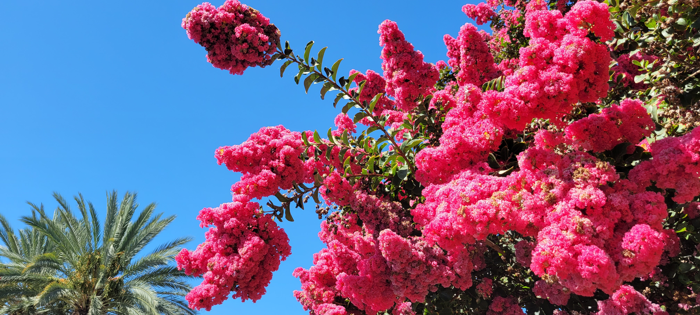

About Wild Oasis
Wild Oasis is your paradise at home. We offer a wide variety in garden walks including, but not limited to: English Garden, Monotoned themed gardens, Dr. Suess Garden, Rose Gardens and many more. We also have a specialty garden for each time of the year and enjoy decorating based on seasons and holidays. We have a wonderful cafe for you to enjoy and benches along our trails. We have 2 parks in the middle of our gardens and several tables for families and friends to enjoy. We are so excited to have you visit us! And if your interested in hosting your next event with us, hop on over to our contact page.